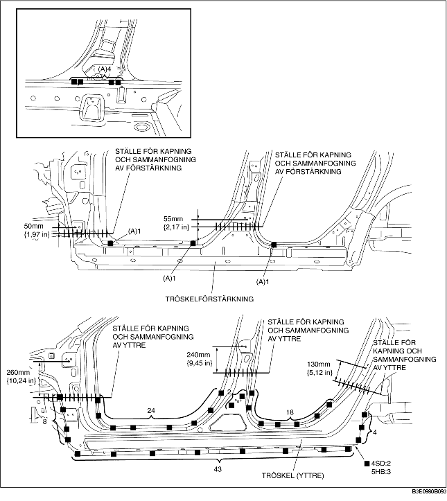

1. När nya och befintliga delar i karossen ska sammanfogas och skäras till, provmontera den nya delen och mät och justera sedan karossen vid behov så att den stämmer enligt ritningen.
2. Borra hål för pluggsvetsning innan de nya delarna monteras.
3. Svetsa de 7 punkter som markeras med (A) och montera tröskelförstärkningen tillfälligt.
4. Montera de nya delarna tillfälligt för att säkerställa att de passar.
